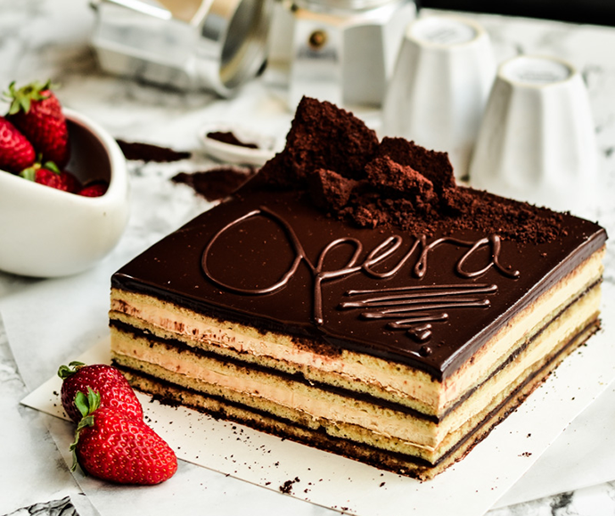
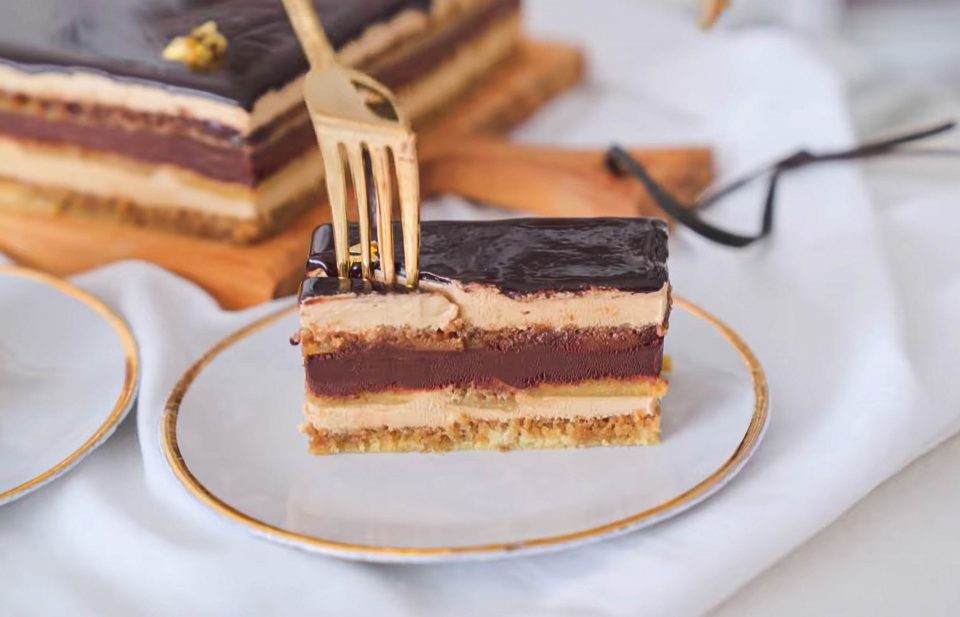

BOLO ÓPERA

Ingredientes: Biscuit Amande (massa)
- 70 gramas de MANTEIGA SEM SAL
- 340 gramas de FARINHA DE AMÊNDOAS
- 340 gramas de AÇÚCAR IMPALPÁVEL
- 90 gramas de FARINHA DE TRIGO
- 8 OVOS
- 9 CLARAS
- 50 gramas de AÇÚCAR
Ingredientes: Calda
- 1 xícara de ÁGUA
- ½ xícara de AÇÚCAR
- 2 colheres de sopa de CAFÉ SOLÚVEL
Ingredientes: Creme de Manteiga
- 300 ml de LEITE
- 3 colheres de sopa de CAFÉ SOLÚVEL
- 5 GEMAS
- 50 gramas de AÇÚCAR REFINADO.
- 500 gramas de MANTEIGA SEM SAL
- 3 CLARAS
- 90 gramas de AÇÚCAR REFINADO
Ingredientes: Ganache
- 220 ml de LEITE
- 300 gramas de CHOCOLATE AMARGO
- 100 gramas de MANTEIGA
Ingredientes: Glaçagem
- 100 gramas de AÇÚCAR REFINADO
- 45ml de ÁGUA
- 75ml de CREME DE LEITE FRESCO ou NATA
- 35 gramas de CACAU EM PÓ 100%
- 1 colher de sopa de GLUCOSE
- 1 folha de GELATINA
Modo de preparo: Biscuit Amande (massa)
- Derreta a manteiga em fogo baixo, desligue e deixe esfriar.
- Em um recipiente misture a farinha de amêndoas, o açúcar impalpável e a farinha de trigo, todos
peneirados.
- Acrescente os ovos e misture com a batedeira até ficar completamente homogêneo.
- Na sequência, coloque a manteiga derretida e misture.
- Em outro recipiente, bata as claras até espumar. Acrescente ⅓ de açúcar, bata até ficar branquinho.
- Coloque o restante das claras e bata mais um pouco até criar ondinhas.
- Misture delicadamente as claras na massa com a ajuda de um fuê, colocando primeiro a metade e depois o
restante.
- Distribua a massa em três partes iguais em formas também iguais de 40x30 cm, com papel manteiga.
- Passe o dedo polegar nas laterais, apertando o papel manteiga e homogeneizando as bordas.
- Leve para assar em forno preaquecido a 220ºC por 7 a 10 minutos ou até que esteja levemente dourada.
- DICA: é importante assar todas as massas ao mesmo tempo, para não perder a aeração das claras. Mas, caso
não
tenha espaço no seu forno, divida a receita em 3 partes e prepare a massa logo antes de colocar para
assar.
- Ao tirar do forno, envolva as massas com plástico filme e espere esfriar assim, para não perder a
umidade.
Modo de preparo: Calda
- Misture a água, o açúcar e o café solúvel em uma panela e deixe esquentar.
- Coloque em um potinho fechado e deixe esfriar.
Modo de preparo: Creme de Manteiga
- CREME DE GEMAS: Coloque o leite e o café solúvel em uma panela, misture e deixe ferver.
- Em outro recipiente, bata as gemas e o açúcar.
- Coloque o leite fervido aos poucos por cima das gemas e mexa bem.
- Leve de volta para o fogo até cozinhar e ficar um pouco cremoso. Ao passar o dedo na espátula, deve
ficar o
rastro limpo (ponto napê).
- Leve para a batedeira para misturar bem e amornar.
- Ao amornar, coloque a manteiga gelada picada e continue batendo até ficar em uma consistência bem
cremosa.
- Reserve e faça o merengue suíco.
- MERENGUE SUÍÇO: Em um recipiente misture as claras com o açúcar e leve ao fogo em banho-maria até ficar
morno e o açúcar dissolver bem.
- Tire do banho maria e, com uma batedeira, bata bem até ficar bem cremoso e com muitas ondinhas.
- Misture o merengue suíço ao creme de gemas colocando primeiro a metade e depois o restante.
- Reserve.
Modo de preparo: Ganache
- Ferva o leite e coloque por cima do chocolate picado. Deixe parado por 3 minutos antes de mexer.
- Misture bem até ficar um creme homogêneo e acrescente a manteiga gelada e picada.
- Mexa até se dissolver por completo.
- Reserve.
Modo de preparo: Montagem
- Tire os plásticos filme que estão envolvidos nas massas.
- Use o fundo da forma para cortar as massas no formato ideal e tirar as bordas.
- Vire do outro lado e retire o papel manteiga.
- DICA: utilize um utensílio mais duro, como um levantador de bolo, para auxiliar na retirada do papel
manteiga.
- Coloque o primeiro biscuit amande na forma de montagem, deixando para cima a parte contrária da que
estava
em contato com o papel manteiga.
- Molhe bem com a calda utilizando um pincel.
- Coloque metade do creme de manteiga e espalhe bem.
- Leve para o congelador por 15 minutos.
- Coloque o outro biscuit amande, molhe com a calda de café e distribua toda a ganache de chocolate,
espalhando bem.
- Leve para o congelador por 15 minutos.
- Adicione mais uma camada de creme de manteiga, alise bem e deixe bem reto.
- Leve para o congelador por 30 minutos.
Modo de preparo: Glaçagem e Finalização
- Coloque em uma panela o açúcar, a água, o creme de leite, o cacau e a glucose. Misture bem e deixe até
ferver.
- Tire a mistura do fogo e deixe amornar, até ficar de morno para quente (em 55ºC) e acrescente a gelatina
já
hidratada. Mexa bem até dissolver.
- Com a ajuda de um mixer, coloque dentro da panela e deixe por um minuto para incorporar bem.
- Deixe esfriar um pouco, até ficar morno (35ºC).
- Tire o Ópera do congelador e coloque a cobertura de glaçagem por cima passando por uma peneira.
- Levante a forma de um lado para o outro para espalhar bem a glaçagem sem usar uma espátula.
- Deixe voltar à temperatura ambiente fora da geladeira por 20 minutos.
- Passe uma faca nas laterais e desenforme.
- Esquente uma faca colocando em água quente e corte as laterais para melhorar a apresentação das camadas.
- Sirva em temperatura de geladeira, em fatias finas e aproveite!
